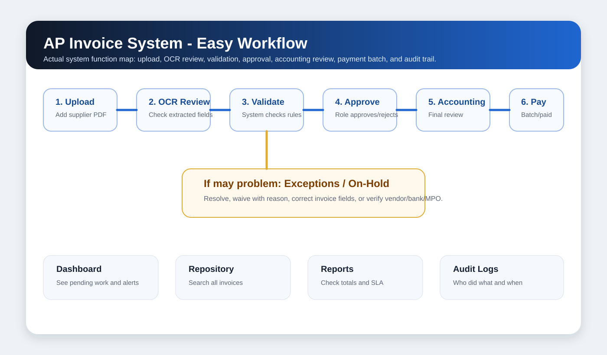

1. Ano ang AP Invoice System?
Simple explanation: This system helps Madison 88 receive supplier invoices, read the PDF, check the details, route approvals, handle issues, and prepare payment. Parang tracking board siya ng invoice from upload hanggang payment.
Instead of manually chasing email threads and files, users can see where each invoice is, who needs to act, and what problem is blocking it.
2. Big Picture Workflow

- Upload invoice. Add the supplier PDF.
- Review OCR. Check if vendor, invoice number, amount, date, MPO, and bank details are correct.
- Validate. System checks vendor, duplicate, amount, bank, signatures, and NextGen MPO.
- Approve. Correct approver reviews and approves or rejects.
- Accounting review. Accounting checks final details before payment processing.
- Payment batch. Approved payments are grouped, reviewed, exported, and marked paid.
3. Main Screens and What They Are For
| Screen | Use This When... | Simple Meaning |
|---|---|---|
| Dashboard | You want to see work pending, invoice counts, alerts, and recent activity. | Home page / command center. |
| Upload Invoice | You received a new supplier PDF invoice. | Start here for new invoices. |
| Invoice Repository | You need to search old or current invoices. | Invoice filing cabinet. |
| Approvals | An invoice is waiting for your approval. | Your approval inbox. |
| Exceptions | The system found a problem with an invoice. | Problem-solving area. |
| On-Hold Queue | An invoice is paused because something must be fixed first. | Paused invoices list. |
| Vendors | You need to check supplier name, aliases, or bank details. | Supplier master list. |
| Batches | You are preparing or reviewing multiple payments. | Payment grouping screen. |
| Reports | You need totals, trends, and management summaries. | Performance and finance summary. |
| Audit Logs | You need to know who changed or approved something. | System history / evidence trail. |
4. Daily Work by Role
Purchasing / MLO Users
- Upload or review invoices.
- Check OCR fields.
- Resolve purchasing-related issues.
- Approve if assigned to your role.
Accounting Users
- Review approved invoices.
- Check bank and payment details.
- Create or review payment batches.
- Monitor posted and paid status.
Managers / Supervisors
- Approve invoices within authority.
- Review exceptions and waivers.
- Check SLA and reports.
- Make sure blockers are handled quickly.
IT / Admin
- Manage users and settings.
- Check system health.
- Help with login or technical issues.
- Maintain audit and configuration.
5. How To Upload an Invoice
- Click Upload Invoice.
- Choose the PDF file from your computer.
- Wait while the system reads the invoice.
- Review the extracted fields carefully.
- If something is wrong, edit it before saving.
- Confirm the invoice so it can move to validation.
Important: Always check amount, invoice number, vendor, MPO number, and bank account. These are the most important fields.
6. What To Check During OCR Review
| Field | What To Check | Why Important |
|---|---|---|
| Vendor | Supplier name should be correct, not Madison 88. | Wrong vendor can route or pay incorrectly. |
| Invoice Number | Match the PDF exactly. | Used for duplicate checking. |
| Invoice Date / Due Date | Check dates are not swapped or missing. | Used for SLA and payment timing. |
| Total Amount | Check final total, currency, and decimal points. | Used for approval and payment. |
| MPO / PO | Check the material purchase order number. | Used for NextGen validation. |
| Bank Details | Check bank name, SWIFT, and account number. | Critical for payment safety. |
7. Understanding Status and Warnings
Green Good or matched. Usually no action needed.
Yellow Warning or review needed. Check details before proceeding.
Red Problem or blocker. Resolve exception before moving forward.
| Status | Meaning | What User Should Do |
|---|---|---|
| Validation Pending | Invoice is waiting for system checks. | Wait or run validation if button is available. |
| Pending Approval | Someone needs to approve. | Approver should review and approve/reject. |
| Exception | System found an issue. | Open Exceptions and resolve or waive. |
| On Hold | Invoice is paused. | Check hold reason and release only after fixing. |
| Approved | Approval is complete. | Accounting can review next. |
| Payment Scheduled | Payment date is set. | Include in batch when ready. |
| Paid | Payment completed. | No further action unless audit/reconciliation is needed. |
8. Approving an Invoice
- Open Approvals.
- Click the invoice assigned to you.
- Review vendor, amount, document, validation, and any notes.
- Click Approve if everything is correct.
- Click Reject if it should not proceed.
- Use Return for Correction if someone needs to fix data first.
Put a clear reason when rejecting or returning. Example: "Wrong MPO number" or "Bank account does not match vendor master."
9. Handling Exceptions
An exception means the invoice has a problem. Hindi ibig sabihin na rejected agad. It means someone must review and fix or approve the exception.
| Exception | Plain Meaning | Usual Fix |
|---|---|---|
| Amount Mismatch | Invoice amount does not match expected PO/MPO amount. | Check PDF, NextGen, and amount field. |
| PO Not Found | MPO/PO cannot be found in NextGen. | Correct MPO or check NextGen. |
| Bank Mismatch | Bank details differ from vendor records. | Request bank update or verify vendor master. |
| Duplicate Invoice | Same invoice may already exist. | Search repository before proceeding. |
| Missing Signature | Required approval/signature is missing. | Ask correct person to approve. |
Resolve means the issue was fixed. Waive means the issue remains but management/accounting allows it to continue. Waive only with a proper reason.
10. Payment Batch Basics
- Accounting checks invoices ready for payment.
- Select scheduled payments.
- Create a batch.
- Submit for supervisor review.
- Export or process the payment.
- Record paid date, reference number, bank used, remarks, and proof if required.
11. Simple Troubleshooting
| Problem | What To Try First |
|---|---|
| I cannot find an invoice. | Clear filters, search invoice number, vendor, or date range in Repository. |
| Upload is stuck. | Wait a few minutes, then retry with a clean PDF. If still stuck, contact IT. |
| Approve button is missing. | The invoice may not be assigned to your role or stage. |
| Invoice has red warning. | Open the exception details and check what field is wrong. |
| Bank details are wrong. | Do not manually ignore it. Request/verify vendor bank change. |
| Payment cannot proceed. | Check for missing approval, unresolved exception, or on-hold status. |
12. Best Practices
- Always compare important fields against the PDF before confirming.
- Use clear notes. Short but specific is best.
- Do not waive exceptions casually. Waivers are recorded in audit logs.
- Check notifications and approvals daily.
- Use the Repository before assuming an invoice is missing.
- Ask IT/Admin if a screen is missing from your sidebar; it may be role-based.